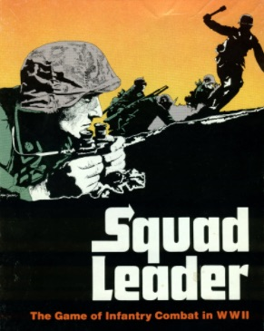

Wasa is a concept for a fully online board-game platform. Wasa explores how modern web technologies can enable classic board games to be enjoyed on modern platforms such as touch devices as well as on large-screen PCs.
What makes Wasa different from other board-game (online or not) solutions.
The draw-back is of course that players must know the rules and there is no automatic score/resource counting etc.
The backend is based on a Redis database which the HTML5/Javascript client interacts with. The security comes from client-side generated Keys to create and find games as well as client side generated public and private key-pairs.
Game observers can listen for updates by knowing the public key of the game. Only players can update the game state using a shared secret game-key. When players update the game state (by moving a piece or rolling a die) they sign the events using the private message key (not same as the secret game-key). Other players as well as observers of the game will receive the updates instantly - no page reload needed.
The content below serves as a demo for the concept and will be updated along the way. While features are added continuously, Wasa aims to implement games with the following characteristics at this time:
We implement several games in parallel to keep the platform general so the special needs of different games can be identified and handled in an ordered fashion.
| Game | Status | Special needs | Comments |
|---|---|---|---|
|

Squad Leader - The guards counter-attack scenario only |
Solo playable but game state will be refreshed on page reload! | Flipping of components. Maybe rotation. Dice. | - |
| Blocks can be place and rotated. All leader-components not yet implemented. | Flip and rotation of components. | - |